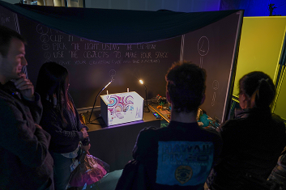
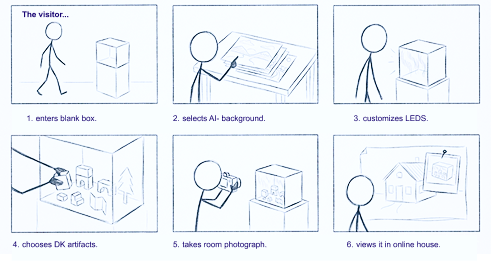
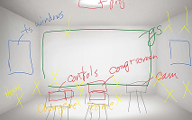
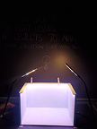
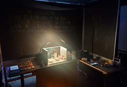
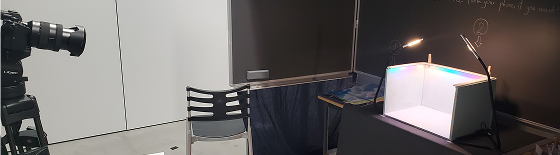
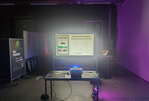
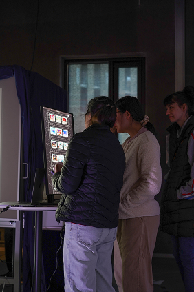
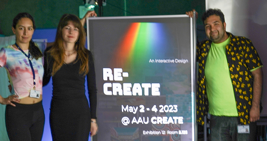

Re-CREATE: Participatory Environmental Modeling

Re-CREATE turns the gallery into a studio for participatory environmental modeling, where visitors arrange physical objects to construct miniature rooms inside a light-controlled box. Participants select an AI-generated background and customize programmable LED lighting before photographing their room to add it to a shared online house. Physical arrangements become a tangible method for proposing, comparing, and revising possible environments. Connecting tactile decisions with responsive digital media makes collective spatial design a negotiated public activity.
- Format: Participatory installation and interactive environmental modeling
- Context: Art & Science Symposium, Aalborg University, Denmark, 2023









